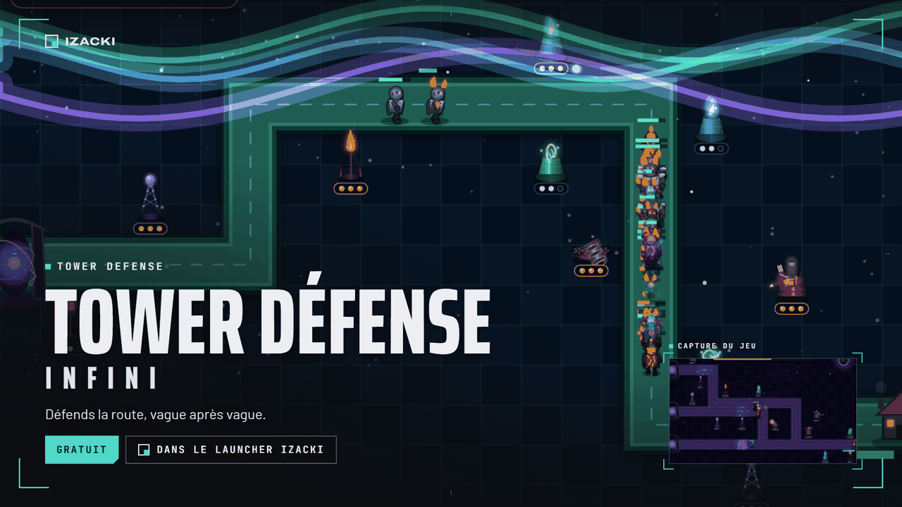
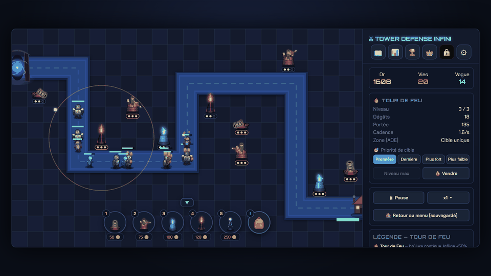
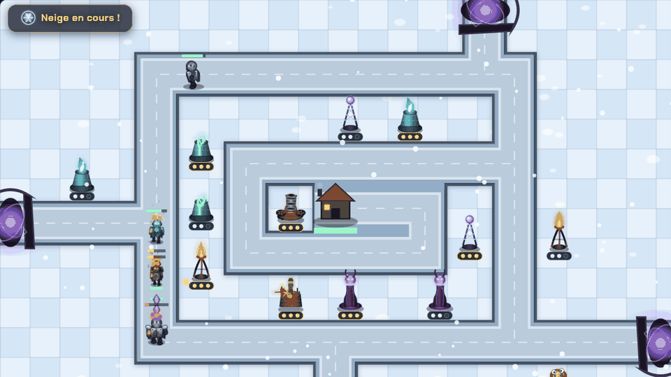
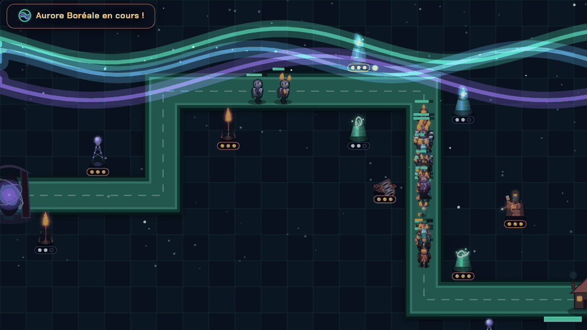
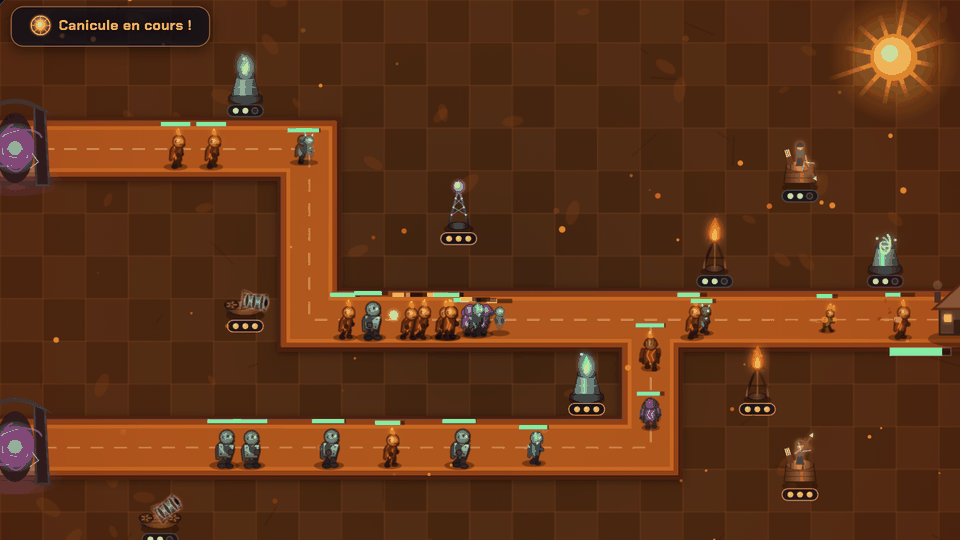
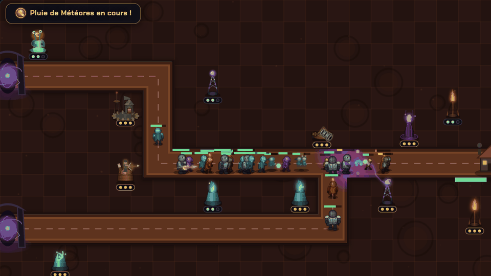

Tower defense
Tower Défense Infini
S'installe et se met à jour avec Izacki Launcher

- Version
- 1.0.26
- Mise à jour
- Taille
- Environ 4 Mo
- Prix
- Gratuit
- Plateforme
- Windows 10/11
Principe
Arrêter les zombies avant la base.
Un tower defense contre des vagues de zombies sans fin : tu poses des tours le long de la route et tu vois jusqu'où tu tiens.
Les zombies arrivent par la route et tu dois les arrêter avant qu'ils atteignent ta base. Tu poses des tours sur les côtés, tu gagnes de l'or à chaque zombie tué et tu le dépenses en nouvelles tours ou en améliorations (trois niveaux par tour). Chaque zombie qui passe te coûte des vies : 20 sur la carte facile, 3 sur les cartes extrêmes. Il n'y a pas de dernière vague, elles deviennent juste plus dures.
Captures
En jeu.






Tours
Les tours.
Dix tours. Neuf se débloquent au fil des vagues, la dixième, la Tour du Prestige, avec le Prestige. La barre de raccourcis n'a que cinq emplacements : il faut choisir. Les tours peuvent aussi se combiner, avec cinq synergies cachées. Par exemple, un zombie gelé qui prend un tir de Feu encaisse des dégâts en plus et perd son gel.
| Tour | Débloquée | Rôle |
|---|---|---|
| Canon | Vague 1 | Tir sur une seule cible, sans faiblesse particulière. |
| Archer | Vague 5 | Flèche perçante qui touche tous les ennemis alignés, avec plus de dégâts en bout de ligne. |
| Glace | Vague 10 | Ralentit sa cible. +50 % de dégâts sur les zombies de feu, −50 % sur ceux de glace. |
| Feu | Vague 20 | Brûlure continue. +50 % de dégâts sur les zombies de glace, −50 % sur ceux de feu. |
| Vent | Vague 30 | Lames de vent en cône qui font saigner les ennemis touchés. |
| Tesla | Vague 45 | Éclair qui enchaîne jusqu'à 3 ennemis et les immobilise un court instant. |
| Poison | Vague 60 | Boule toxique qui explose en nuage et empoisonne tous les ennemis du cercle. |
| Caserne Militaire | Vague 70 | Toutes les 30 s, un véhicule (jeep, camion, tank) parcourt la route en percutant les zombies. |
| Glu | Vague 80 | Englue et ralentit sa cible. Au niveau 3, la boule éclate en flaque et ralentit tout le groupe. |
| Tour du Prestige | Prestige 1 | Un seul exemplaire à la fois. Elle saute d'un endroit à l'autre ou reste fixe, et frappe en zone. |
Longue partie
Quand la partie dure.
Vagues maudites et boss
Dès la vague 15, certaines vagues sont maudites (Horde, Essaim, Vitesse Démoniaque, Enragés, Blindage Maudit) et changent les règles de la vague en cours. Un mini-boss arrive aux vagues 5, 15, 25…, un boss aux vagues 10, 20, 30… (cinq boss différents, tirés à la roulette).
Météo
À partir de la vague 30, la météo peut s'en mêler pendant environ une minute et demie : Neige, Canicule, Éclipse, Tempête de sable, Aurore Boréale, Pluie de Météores, ou Bonheur, qui double l'or lâché par les ennemis.
Prestige
Quand tu atteins la vague 200, tu peux passer Prestige. La partie repart de zéro (vague, or, tours), mais ton profil, tes stats et tes succès restent, et chaque niveau ajoute 50 % d'or par zombie tué et 100 d'or de départ. Prestige 1 débloque aussi la Tour du Prestige, la vitesse x3 et une sixième carte, la Spirale du Prestige (quatre portails, 3 vies). Prestige 2 ajoute une compétence passive qui annule une défaite par partie, avec un temps de recharge.
Infos
En bref.
Configuration
- Éditeur
- Izacki
- Plateforme
- Windows 10/11
- Taille
- Environ 4 Mo
- Prix
- Gratuit
- Compte
- Compte Izacki gratuit, pour le Launcher
- Langue
- Français
- Commandes
- Souris et raccourcis clavier
Dans le jeu
- Tours
- 10, avec 3 niveaux chacune
- Cartes
- 6, de 1 à 4 portails
- Succès
- 124
- Wiki
- Intégré au jeu
- Sauvegarde
- Sur ton ordinateur ; succès et classement liés à ton compte Izacki
- Classement
- Meilleure vague, consultable dans le jeu
Nouveautés
Dernières versions.
v1.0.26Les boss restent sur la route
- Les gros ennemis et les boss sont recentrés sur la route quand elle est horizontale : ils ne dépassent plus au-dessus d’elle. La barre de vie suit le nouveau placement.
v1.0.25Bandeau des vagues maudites remonté
- Le bandeau « vague maudite en cours » est remonté dans le coin du terrain : il ne cache plus les premiers ennemis sur la route.
v1.0.24Zombies animés, route redessinée et menus plus clairs
- Les zombies marchent maintenant avec les bras qui balancent le long du corps. Ils sont vus de profil sur une route horizontale, de face quand elle descend et de dos quand elle monte.
- Le jeu est plus fluide quand beaucoup d’ennemis sont à l’écran.
- La route est redessinée : plus large, avec un liseré marqué et une ligne centrale en pointillés, et elle s’adapte à la météo.
- Le menu Échap propose un bouton « Retour au menu principal » : ta partie est sauvegardée automatiquement.
- « Charger une partie » affiche la dernière partie sauvegardée en premier. La suppression d’une sauvegarde demande confirmation dans une fenêtre du jeu. L’import et l’export de codes de sauvegarde sont retirés.
- Le niveau des tours s’affiche dans une capsule bronze, argent ou or sous chaque tour.
- La barre d’icônes du panneau de droite reste en haut pendant le défilement, et les barres de défilement sont plus discrètes.
- Le jeu ne s’ouvre plus qu’une seule fois : relancer l’exécutable ramène la fenêtre déjà ouverte au premier plan.
v1.0.23Popup de succès façon Steam
- Quand tu débloques un succès, une carte noire glisse en haut à droite du terrain avec un médaillon dessiné aux couleurs de la catégorie, le nom et la description, avec un petit accord (désactivable avec les sons spéciaux).
- Si plusieurs succès tombent en même temps, les cartes s'affichent l'une après l'autre.
- Les succès débloqués apparaissent aussi en direct dans le Launcher.
v1.0.22Nouveau menu d'accueil
- Écran d'accueil complet : Lancer une partie, Charger une partie, Paramètres, Crédits et Quitter le jeu, avec un fond animé qui montre les vraies tours et les vrais zombies du jeu.
- Nouvelles polices (Orbitron et Chakra Petch) pour une interface plus lisible.
- Transitions fluides entre les écrans du menu.
- Le choix de qualité des effets visuels s'applique tout de suite, même menu ouvert.
- Clavier : Échap fonctionne aussi depuis les interrupteurs des Paramètres, et le curseur se place dans le nom de la partie.
Télécharger
Installe le Launcher, puis lance Tower Défense Infini.
Windows 10/11 · moins de 3 Mo
Gratuit, avec un compte Izacki gratuit